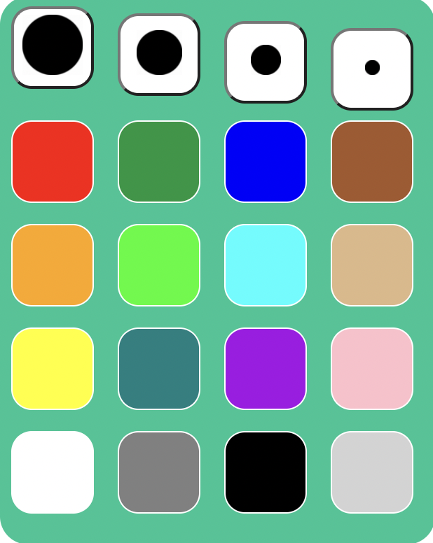
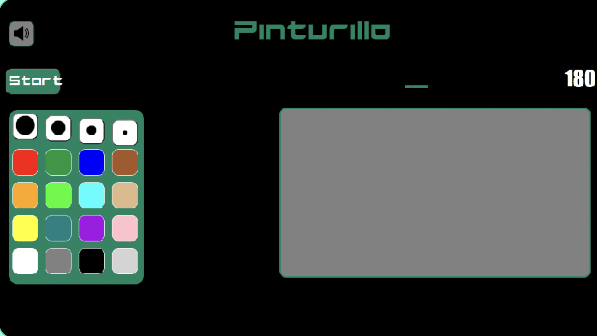

Il nostro gioco consiste nel disegnare la parola che appare sullo schermo una volta cliccato start
Avremo a nostra disposizione la seguente griglia di colori

E inoltre una funzione per rendere la penna più grande o più piccola
il prossimo passo è disegnare!! basta premere sulla nostra lavagna e potrete finalmente iniziare
per far si che i vostri occhi non
si stanchessero durante la note,
abbiamo messo la versione notturna!^_^!

inoltre abbiamo inserito dei suoni ad accompaganre la vostra esperienza, in modo da non rendere la cosa monotona